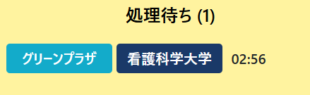
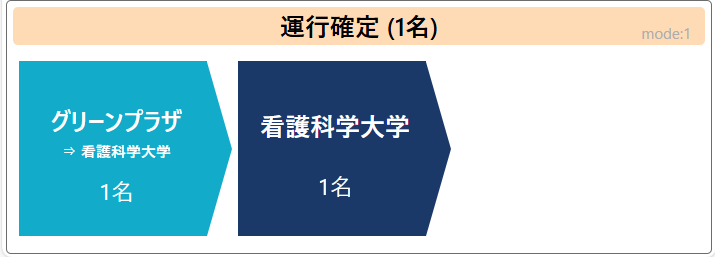
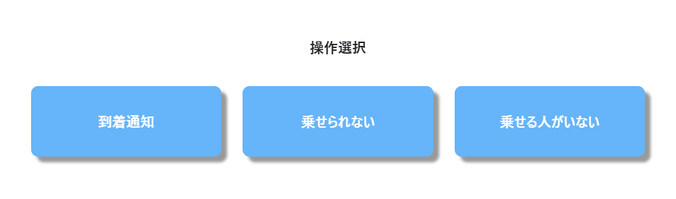
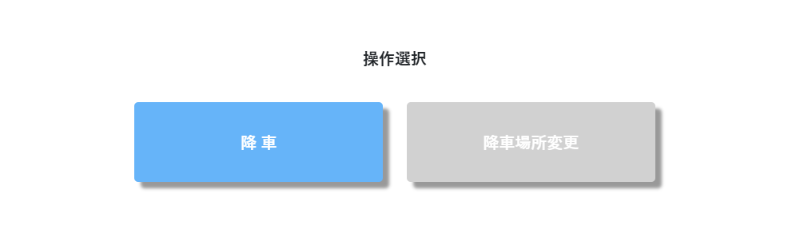
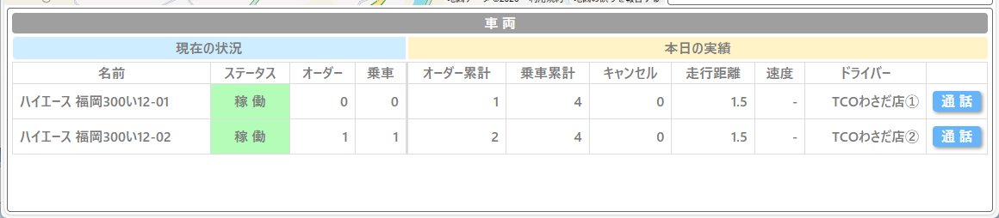
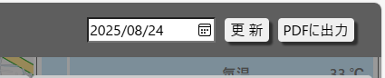

01
乗降場所・人数を選ぶ
地図で乗る場所、降りる場所を選び、一緒に乗る人数を入力します。
「横のエレベーター」を実際に使い、運転し、運営するための詳細版です。利用者・ドライバー・管理者の3つの立場から、操作と運用を整理しています。各4ページのPDFを個別に配布できます。
買い物へ。公民館へ。いつもの暮らしの場所へ。必要なときに呼び出して、決められた乗降場所の間を移動します。
ユーザー用PDF・4ページ ↗大分の実証では、トヨタカローラ大分の試乗車（アルファード）を活用し、地元住民を送迎しました。
スマホで呼ぶ。近くの乗降場所で待つ。迎えの車を確認して乗る。帰りも改めて呼び出します。

地域の案内するLINEなどから、利用画面を開きます。初回の登録方法は地域の案内をご確認ください。
車が決まったことを確認し、待つ場所を写真で確かめてから、乗降場所へ向かいます。
よく使う経路を登録。次回は経路を選び、内容を確認して依頼します。
出発と到着を入れ替え、改めて依頼。帰りが自動予約されるわけではありません。
停留所の写真で周辺の目印を確認。不明なときは運営窓口へ確認します。
画面のキャンセル表示と地域のルールを確認し、取り消し操作または運営窓口への連絡を行います。
乗降場所と確定した車両を再確認。解決しないときは運営窓口へ連絡します。
電話受付などの利用支援は地域によって異なります。運営窓口へご相談ください。
利用できる車両や介助の範囲を、呼び出す前に運営窓口へ確認してください。
運行エリア・日時・料金・対象者・連絡先・LINE登録先は地域ごとに設定します。掲載画面は資料提供時の例です。最新の案内をご確認ください。
呼び出しを引き受け、表示された巡回順に運行します。到着を知らせ、乗車を確認し、降車後に完了処理を行います。
担当する運行エリアを確認します。
自身のアカウント・担当を確認します。
当日使用する車両を選択してログインします。

処理待ちの依頼を確認し、担当する呼び出しを引き受けます。

乗車場所と降車場所、巡回順を確認して安全に移動します。

安全に停車して到着を知らせます。乗る方・人数・行き先を確認してご案内します。

利用者の降車を目視確認してから、画面上の処理を完了します。

指定場所へ到着し、利用者を迎えられる状態になったとき。
満車や車両条件など、利用者を乗せられない場合。
指定場所に到着しても利用者が確認できない場合。
停留所・車両・依頼内容を再確認し、運営ルールに従って処理します。
車両／燃料・充電／スマホ／通信／ログイン／当日の運行エリア／緊急連絡先を確認。
処理待ちの依頼が残っていないか、乗車中の利用者がいないか、日報・車両状態を確認。

車両位置、待ち状況、オーダー、乗車中人数を確認します。
呼び出し件数、乗車人数、稼働時間、走行距離などを記録します。
待ち時間やキャンセル、時間帯・乗降場所別件数を改善に使います。
現在の待ち状況を確認。
引き受け件数や利用状況を確認。
オーダー、乗車人数、稼働状態を確認。

平均だけでなく最大待ち時間も確認。長く待っている人と車両の状況を照合します。
対象の日付・月を選び、更新して「PDFに出力」。掲載済みの帳票項目を使って運行を振り返ります。

呼び出し件数、乗車人数、稼働時間、距離など。
乗車時間、待ち時間など。
時間帯・車両配置・乗降場所・運行手順のどこに原因があるか確認します。
満車、不在、操作ミスなどを分け、案内や待機ルールを見直します。
「知らない」「使えない」「行き先が合わない」を聞き分けます。
責任者／運行体制／乗降場所／対象者／日時／料金／休止判断
利用者窓口／満車・不在・障害・緊急時の対応
閲覧者／保存・共有範囲／個人情報／報告方法
アプリ提供版／端末・通信／担当者教育／テスト運行
買い物や通院を実現できたか。外出が増えたか。運営費を誰が負担し、続けられるか。数字と現場の声を合わせて改善します。
画像・操作説明：既存のユーザー・ドライバー・管理用マニュアルと今回の提供写真に基づく表示例。提供版により画面・機能は異なります。地域の運行ルールと最新の操作案内を確認してください。
{kind=link}
{kind=link}
{kind=link}
{kind=link}
{kind=link}
{kind=link}